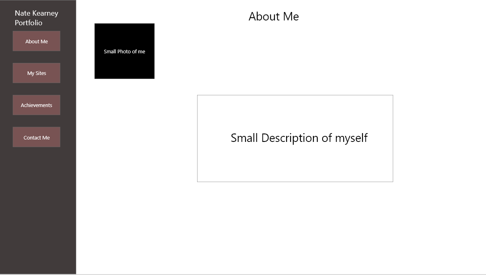
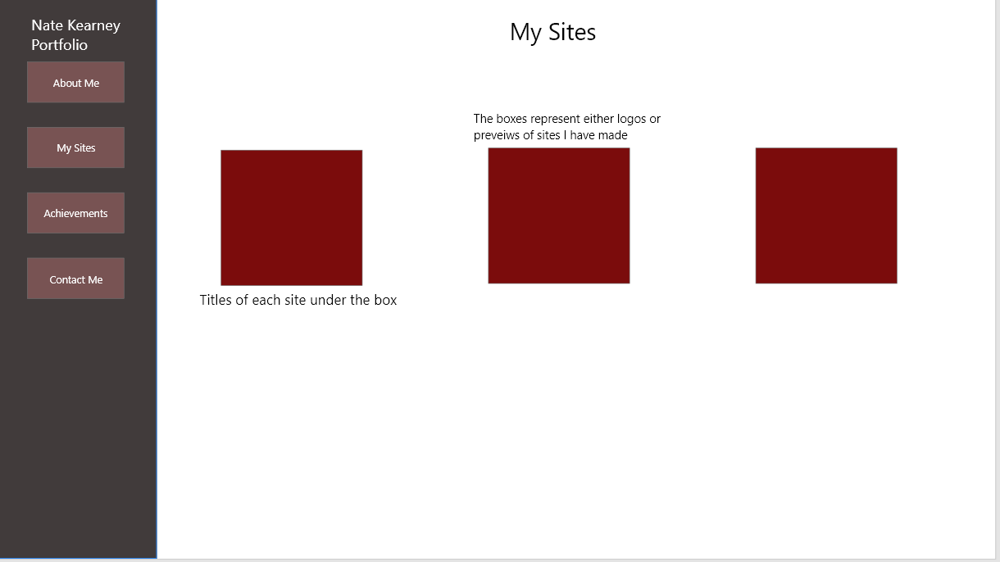
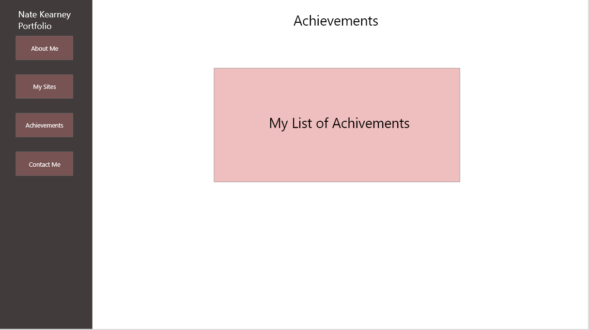
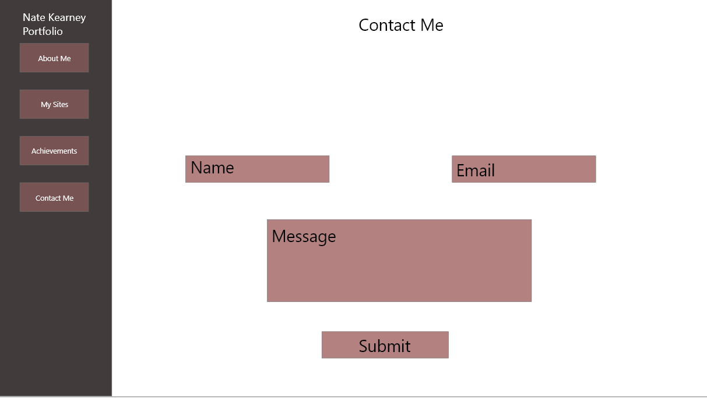
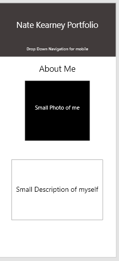
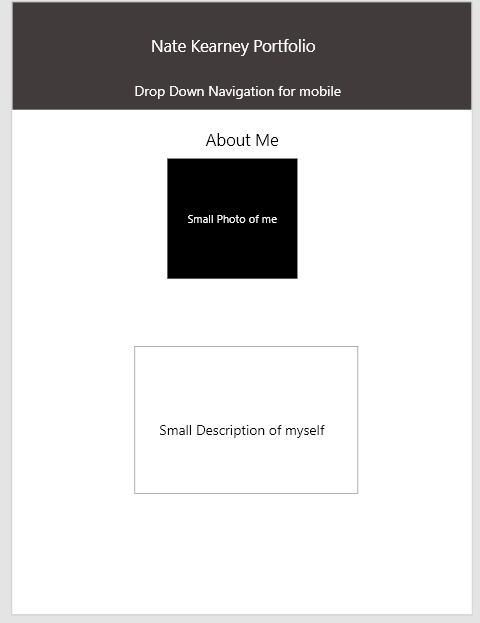

The audience profile for this site will be for people that want to hire me or contract me to build a website for them.
I want to make sure this portfolio looks as professional as possible for my audience
The key to these objectives is accessability
Below is the wireframe for the homepage and about me section.
This is the wireframe for my sites
Below is the wireframe for my Achievements page.
Finally, this is the wireframe for my contact page
Below is the mockup for the homepage on a personal computer
Here is the mockup for what the site may look like on mobile.
Finally, is the mockup for tablets.
As a new, and not very known, web designer, it is important to use any advantage you have to get the word out about your brand.
Social media is a good way to gain traction. linkedin is a great way to gain popularity.
Another way to gain a customer base for my brand is through sites like Youtube. Using videos to show how you did something on a site is a good way to advertise your skills.